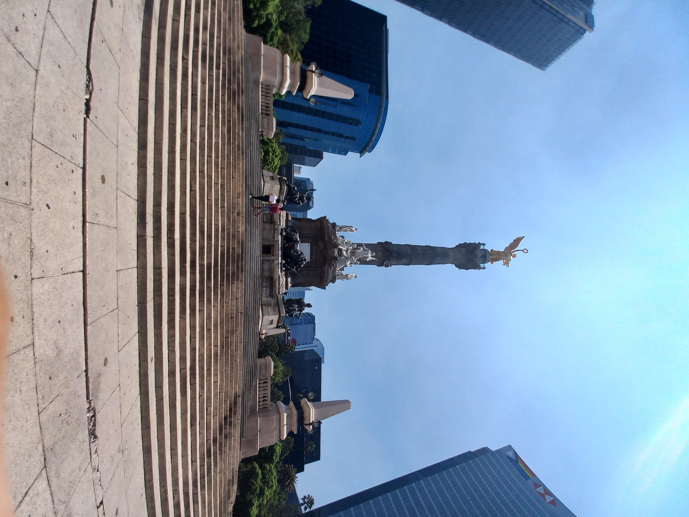

Monumentos y Arquitecturas Emblematicas
México es sin duda uno de los países que cuenta con una mayor diversidad de playas, zonas montañosas, bosques, entre otros paizajes. Pero Cercano a la Ciudad de México se encuentran varias zonas historicas que han marcado puntos importantes a lo largo de la historia del país y que sin duda vale la pena visitar no solo por su belleza, sino tambien para conocer la historia de cada lugar, cada estructura y cada monumento que se edifico con sus respetivos propósitos y que tanto atraen a los turistas que los visitan; En esta sección podras leer sobre algunos de los monumentos/arquitecturas que son visitados con mucha frecuencia, ademas de mostrarte un poco de información introductoria, donde te contamos un poco del lugar como la ubicacion y algunas actividades que puedes realizar en los diferentes Monumentos y Arquitecturas mas emblematicas de Mexico.
Si quieres saber mas sobre la historia, datos interesantes de cada lugar y observar mas fotografias del lugar, da click en "Mas Informacion".
Ex Convento del Siglo XVII en el Desierto de los Leones
Antes de convertirse en el primer Parque Nacional del pais, fue el lugar elegido por los monjes Carmelitos para encontrar la paz. Ahora, las leyendas del lugar cuentan otra historia.
Ademas del emblematico ex convento, podras disfrutar de una hermosa caminata por el bosque de La Venta y la bajada del rio, ademas de variedad de platillos que los diferentes restaurantes pueden ofrecer. Una experiencia que merece la pena.
Ubicación:
Mas Información
Monumento a la Revolucion Mexicana

Sin duda uno de los lugares mas visitados en la ciudad de México formando parte de un conjunto integrado por el propio monumento, la Plaza de la República y el Museo Nacional de la Revolución, los cuales merecen la pena conocer por lo menos un par de veces.
Ademas de apreciar el tamaño y la edificación de este importante monumento,pupedes acceder a las diferentes secciones del mismo como la Cimentación, el Elevador Panorámico, el Mirador, la Linternilla y la Estructura junto con algunas Exposiciones que se ofrecen.
Y quizá no lo sabías pero al final del mes puedes recibir al señor sol en la cima del Monumento a la Revolución acompañado de pan dulce y una taza con chocolate caliente en mano.
Ubicacion:
Mas Información
Hemiciclo a Juárez
El Hemiciclo a Juarez es un cenotafio de la Ciudad de México, ubicado sobre la Avenida Juárez, una de las más importantes arterias de la capital de méxico. Honra al expresidente mexicano Benito Juárez, cuyos restos reposan en el Panteón de San Fernando.
El hemiciclo es un punto referencial en la Alameda Central. Ha sido punto de encuentro para el inicio de marchas y mítines populares de movimientos como el estudiantil de 1968 y el de Andrés Manuel López Obrador en 2006. Durante décadas, las conmemoraciones al natalicio de Benito Juárez se realizan de forma protocolaria por los presidentes mexicanos. Durante décadas fue el punto de destino de la Marcha Gay de la ciudad de México hasta que en 1999, el comité organizador decidió llegar al Zócalo capitalino.
En este lugar podras tomar increibles fotografias ademas de contar con parques a su alrededor, donde podras tomar un descanso y visitar los diferentes locales que se encuentran cercanos al sitio.
Ubicacion:
Mas Información
Palacio de Bellas Artes

El Palacio de Bellas Artes es un recinto cultural ubicado en el Centro Histórico de la Ciudad de México, considerado el más importante en la manifestación de las artes en México y una de las casas de ópera más renombradas del mundo.
Este ha sido escenario y testigo de impactantes acontecimientos tanto artísticos, como sociales y políticos; su construcción fue iniciada hacia el final del mandato de Porfirio Díaz con motivo de la celebración del centenario del inicio de la Independencia de México; sin embargo, no fue concluido e inaugurado sino hasta el 29 de septiembre de 1934, debido a la Revolución mexicana.
Es un edificio multifuncional, por lo que alberga diversos escenarios y espacios artísticos como el Museo Palacio de Bellas Artes y el Museo Nacional de Arquitectura. El primero exhibe de forma permanente 17 obras murales de siete artistas nacionales ejecutadas de 1928 a 1963, entre ellos Diego Rivera, David Alfaro Siqueiros y José Clemente Orozco, siendo el más antiguo en el país dedicado a la producción plástica nacional. Así también, es sede de la Orquesta Sinfónica Nacional, la Compañía Nacional de Ópera (Ópera de Bellas Artes), la Compañía Nacional de Danza y del Ballet Folklórico de México de Amalia Hernández. Como institución, depende del Instituto Nacional de Bellas Artes (INBA), parte de la Secretaría de Cultura del gobierno federal. En 1987 fue declarado por la Unesco como monumento patrimonio de la humanidad.
Ubicacion:
Mas Información
El Ángel de la Independencia
El Monumento a la Independencia o Columna de la Independencia (coloquialmente, El Ángel o El Ángel de la Independencia) es una columna honoraria que se encuentra en la Ciudad de México, en la glorieta localizada en la confluencia de la avenida Paseo de la Reforma y las calles Río Tíber y Florencia.
La inauguró en 1910 el entonces presidente de México, Porfirio Díaz, para conmemorar el Centenario del inicio de la guerra de independencia de ese país. En años posteriores se convirtió en un mausoleo para los héroes más importantes de esa guerra. Es uno de los monumentos más emblemáticos de la urbe y usado actualmente como un icono cultural de la Ciudad de México y lugar de festejos y manifestaciones nacionales.
Realizado como una columna honoraria rematada con una estatua de la Victoria Alada sosteniendo una corona de laurel y una cadena rota de tres eslabones, se levanta a su vez sobre un pedestal escalonado completado por diferentes estatuas e inscripciones alegóricas a la independencia de México.
Ubicacion:
Mas Información
Altar a la Patria

El Altar a la Patria es un monumento y mausoleo ubicado en el Bosque de Chapultepec de la Ciudad de México. Obra de Ernesto Tamariz y Enrique Aragón Echegaray, fue construido entre 1947 y 1952. Identificado también como «Monumento a los Niños Héroes», está dedicado a los combatientes mexicanos que murieron en la Intervención estadounidense en México.
El monumento resguarda los restos del general Felipe Santiago Xicoténcatl y los de seis personas que el Ejército Mexicano identificó en 1947 como los de los llamados «niños héroes». Fue inaugurado el 27 de septiembre de 1952.
Ademas de este monumento, si continuas caminando dentro de Chapultepec, podrás llegar al castillo, donde inicia la historia de este monumento. Pero ese es un tema aparte.
Ubicacion:
Mas Información